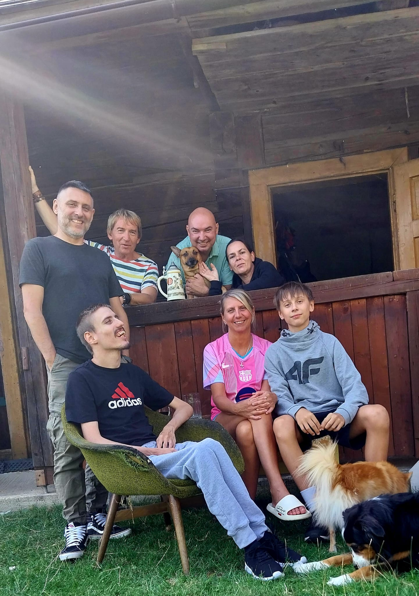
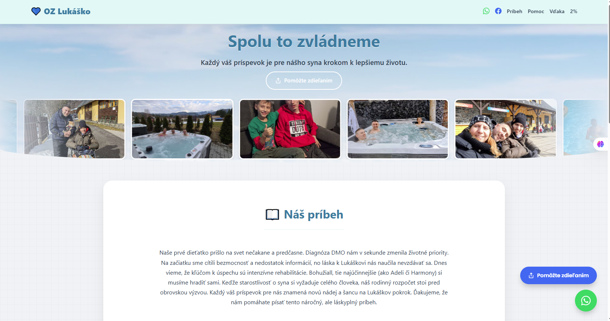
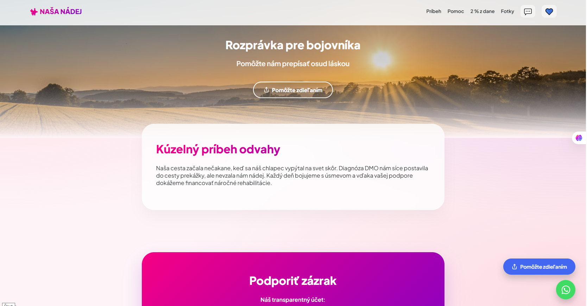

Dvadsaťšesť rokov hľadáme pre nášho syna Lukáša spôsoby, ako zabezpečiť financie na potrebné rehabilitácie a dôstojný život. Bola to cesta plná pokusov a omylov. Hoci sme pre neho vybudovali potrebnú stabilitu a zázemie, ako rodičia vieme, že táto cesta sa nikdy nekončí. Potreby našich detí sú trvalé a každé obdobie prináša nové výzvy, ktoré nás nútia hľadať a skúšať stále nové možnosti.
Dnes sme tu ako vaši sprievodcovia. Nechceme vám tvrdiť, že už nebudete musieť hľadať pomoc – tú budeme pre naše deti potrebovať vždy. Chceme vám však odovzdať naše skúsenosti a ukázať vám systém, ktorý nám v tomto nekonečnom procese reálne funguje. Naším cieľom je, aby ste pri tom hľadaní a skúšaní nestrácali to najcennejšie – váš čas a drahocennú energiu.
Z vlastnej skúsenosti vieme, že život s postihnutím nie je o tom, že budeme ticho sedieť a čakať, kým nám niekto pomôže. Štát nám málokedy podá pomocnú ruku v takej miere, akú naše deti skutočne potrebujú. Pravda je taká, že sme to my, rodičia, kto musí zabezpečiť všetko potrebné. Aby sme to však zvládli dlhodobo, musíme prestať len prosiť o milodar a začať budovať systém. Základom tohto systému je PREZENTÁCIA. Ak chcete osloviť ľudí mimo vašej rodiny a získať dôveru firiem, musíte sa prezentovať profesionálne. Na to je najlepším nástrojom vlastný web, ktorý bude vaším pevným bodom a trvalým domovom pre váš príbeh.
Možno už dnes zdieľate váš príbeh na sociálnych sieťach a cítite vďaku za každé zdieľanie. Je to dôležitý začiatok, no po čase príde moment, kedy je potrebné prekročiť hranice tejto „bubliny“.
Keď majiteľ firmy dostane váš e-mail, hľadá stabilitu. Vlastný web hovorí za vás: „Myslíme to vážne, máme systém.“ Čistá stránka s diagnózou, transparentným účtom a predvyplnenými tlačivami na 2 % z dane raketovo zvyšuje vašu dôveryhodnosť.
Dôvera je kľúčová. Transparentný účet je pre darcov a firmy zásadným signálom. Keď priamo na vašom webe uvidia, ako narábate s prostriedkami, ich dôvera vo váš projekt stúpne. Viditeľná história pohybov na účte je váš najlepší štít proti pochybnostiam.
Fundraising nie je o náhode, ale o disciplíne. E-mail s odkazom na váš web je kľúč k úspechu.
Keď sme Lukášovi hľadali riešenie pre jeho web, skúšali sme cesty, ktoré sa zdali byť „zadarmo“. Neskôr sme však zistili, koľko sme v skutočnosti preplatili za skryté poplatky. Uvedomili sme si, že sme len v drahom nájme na cudzom mieste.
Dnes už vieme, že skutočné riešenie bez nákladov neexistuje, no existuje cesta, ktorá je férová. Našli sme systém, kde web patrí navždy vám, doménu máte na vlastné meno a neplatíte žiadne mesačné nájomné.
Vnímame to ako spôsob, ktorým si môžeme pomôcť navzájom – za naše know-how a technické zázemie nám môžete prispieť k napredovaniu nášho Lukáša. Za náš čas a nastavenie webu budeme vďační za príspevok 100 €, prípadne sa dohodneme podľa vašich možností.
Ak cítite, že prišiel čas dať vášmu príbehu dôstojný domov, sme pripravení kráčať kúsok tejto cesty s vami.
Pozrite si ponuku riešení pre váš príbeh alebo organizáciu. Kliknutím na sken webu Typu A alebo Typu B si môžete prezrieť plne funkčnú živú ukážku.

Klasický darcovský web (Typ A)Prehľadný modrý dizajn, ideálny pre príbeh bojovníka, transparentný účet a 2% z dane.

Klasický darcovský web (Typ B)Moderné purpurové rozloženie s dôrazom na úvodný obrázok a fotogalériu.
Máte špecifickú predstavu? Pripravíme texty a štruktúru presne podľa vášho vlastného zadania.
Pomáhame rodinám zviditeľniť ich príbehy cez darcovské stránky. Projekt je momentálne v príprave.
Vyzbierané: 0 € / 1 000 € (Kapacita: 0 z 10 webov)
| Poradie | Meno žiadateľa | Zdrojová zbierka | Stav |
|---|---|---|---|
|
Aktuálne neevidujeme žiadne žiadosti. Pošlite nám e-mail pre predbežné zaradenie. |
|||
Vytvorme spolu miesto, ktoré bude vaším bezpečným prístavom.
✉️ MÁM ZÁUJEM O VLASTNÝ WEB